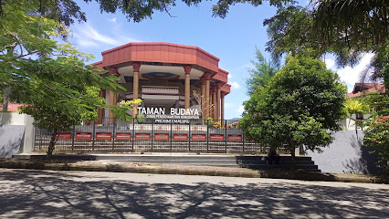

(Gedung Kesenian)
Pusat Kebudayaan Ambon berfungsi sebagai wadah untuk melestarikan dan mengembangkan warisan musik Maluku. Musik adalah bagian integral dari identitas Ambon, yang dikenal dengan melodi indah dan talenta penyanyi. Di sini sering diadakan pertunjukan Tarian Cakalele (tari perang), musik Ukulele khas Ambon, atau festival musik modern yang menampilkan bakat lokal.